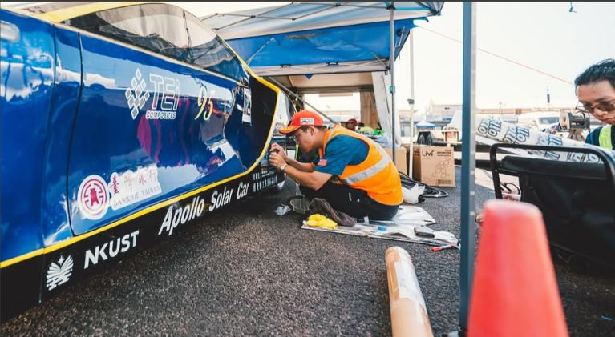
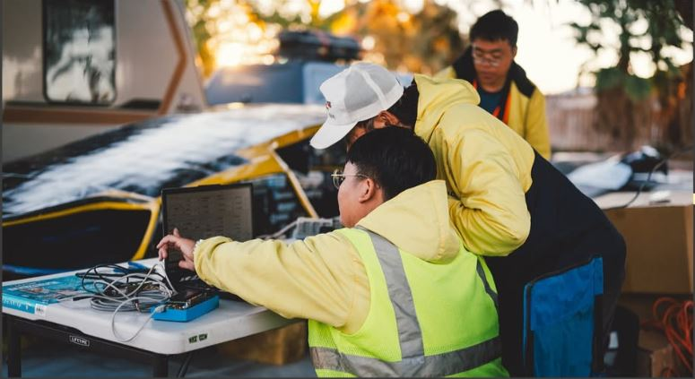
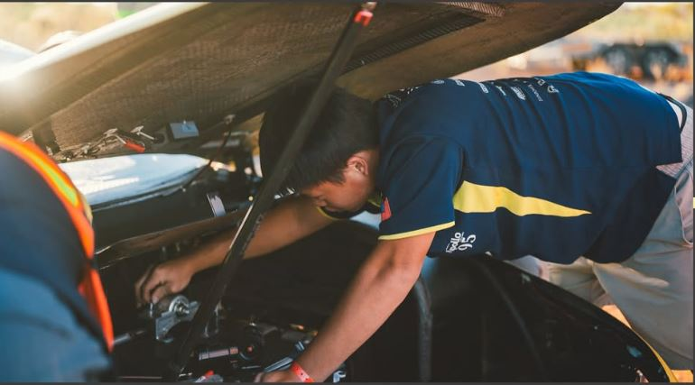

NKUST APOLLO
實戰教育：跨領域整合與技術落地
阿波羅太陽能車隊作為工程人才的培育基地，致力於將學術理論轉化為實際技術。透過參與世界太陽能車挑戰賽，我們與國際頂尖學府交流競技，驗證機電整合、複合材料與能源管理技術，並將實戰經驗回饋於教學與產業應用。

艾和昌教授是車隊的創辦人與主要指導老師。他秉持「做中學」的教育理念，提供技術諮詢與資源整合。
在車隊運作中，艾教授強調學生應具備獨立思考與解決問題的能力。他在關鍵的工程決策與專案方向上給予指導，確保學生能將課堂知識正確應用於實際車輛開發中。
車隊依據專業職能分為三大組別，成員來自不同科系，透過分工合作完成車輛設計與製造。

負責車隊的營運管理與對外事務，確保專案按進度執行並維持良好的對外形象。

負責全車電力系統的設計與整合，涵蓋能量採集、儲存到動力輸出的完整電路規劃。

負責車輛機械結構設計與複合材料製程，致力於打造輕量化且符合空氣力學的車體。